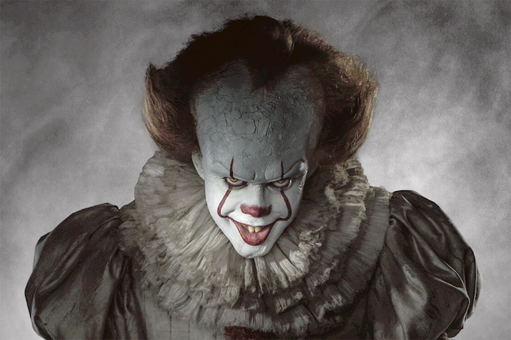
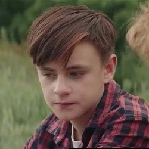

"Resumen"
¿Quién o qué mutila y mata a los niños de un pequeño pueblo norteamericano?
¿Por qué llega cíclicamente el horror a Derry en forma de un payaso siniestro
que va sembrando la destrucción a su paso? Esto es lo que se proponen averiguar
los protagonistas de esta novela. Tras veintisiete años de tranquilidad y
lejanía una antigua promesa infantil les hace volver al lugar en el que
vivieron su infancia y juventud como una terrible pesadilla.


¡Escribenos!
"Derry"
Regresan a Derry para enfrentarse con su pasado y enterrar definitivamente
la amenaza que los amargó durante su niñez. Saben que pueden morir, pero
son conscientes de que no conocerán la paz hasta que aquella cosa sea destruida
para siempre. It es una de las novelas más ambiciosas de Stephen King,
donde ha logrado perfeccionar de un modo muy personal las claves del género de terror. IT
Personajes
